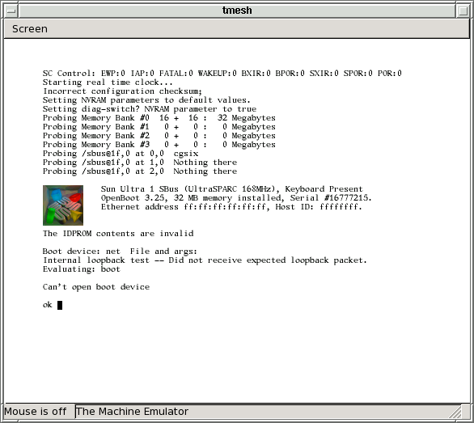
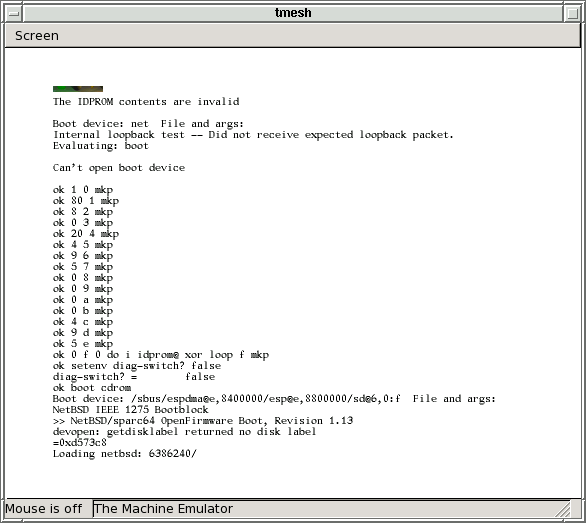
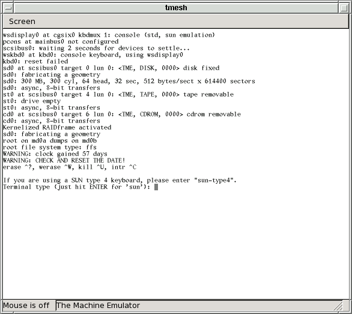

Warning: This is alpha-quality software. Don't count on it for anything. Use it at your own risk.
http://csail.mit.edu/~fredette/tme/SUNW,501-3082-update7.bin
http://csail.mit.edu/~fredette/tme/SUNW,501-1415.bin
http://csail.mit.edu/~fredette/tme/SUNW,501-2325.bin
If Sun asks me to stop distributing these ROMs, I will.
In general, any working directory filename that begins with my- or MY- is a file that is specific to your individual emulated machine. With the exception of the disk image, these are mostly text files, and you are encouraged to edit many of them to suit yourself.
% mkdir /some/where/my-sun4u % cd /some/where/my-sun4u
Now populate this directory:
% cp /usr/pkg/share/examples/tme/SUN-ULTRA-1 ./MY-SUN4UThis file contains tmesh commands that create a Sun Ultra 1. If you don't change this file, it creates a Sun Ultra 1 with a cgsix framebuffer, type-4 keyboard and mouse, one disk drive, one tape drive, and an unconnected network interface.
WARNING: Although tme enables the cgsix emulation in SUN-ULTRA-1 by default, this is only because NetBSD/sparc64 currently does not support a cgthree console. The tme cgsix emulation is extremely poor. It's usable for the OpenBoot and NetBSD console, but it will definitely not run X.If you can't use the emulated framebuffer (because, for example, you aren't running X or didn't build tme with GTK), you must edit this file to disable the GTK-based display and enable the serial console instead. Comments in the MY-SUN4U file should explain how to do this.
% cp /some/where/SUNW,501-3082-update7.bin . % cp /some/where/SUNW,501-1415.bin . % cp /some/where/SUNW,501-2325.bin .
The Sun Ultra 1 NVRAM contents are kept in a file. Creating an initial NVRAM file involves writing a file with a specific number of zeroes.
% dd if=/dev/zero bs=1 count=8176 of=my-sun4u-nvram.bin
% cp /usr/pkg/share/examples/tme/sun-keyboards.txt . % cp /usr/pkg/share/examples/tme/my-sun-macros.txt ./my-sun-macros.txtYou should not edit the sun-keyboards.txt file, however you may want to edit the my-sun-macros.txt file. The two files work together to transform key events on your keyboard into Sun type-4 scan codes.
The sun-keyboards.txt file lists all of the symbols (in X terminology, all of the "keysyms") on a Sun type-4 keyboard, and gives for each keysym a Sun type-4 scan code and some modifier information. Because Sun type-4 keyboards are never going to change, you shouldn't change this file, even if you think it lists keysyms that your keyboard doesn't have, like L1, R11, etc.
The my-sun-macros.txt file is meant to adapt your keyboard to the Sun type-4 keyboard. Any keysyms that the Sun type-4 keyboard has, that your keyboard doesn't have, can be generated by macros added to this file. For example, tmesh may complain that:
[/display0.0]: cannot generate keysym 'R9' directly, or through a macro: No such file or directoryThe odds are good that you don't care about generating the R9 key - it's one of the keysyms on the strange, original Sun numeric keypad. But if you absolutely must be able to generate the R9 key, you could add a line similar to the following to your my-sun-macros.txt file:
Alt_R F9 = R9Then, you could simulate pressing R9 by pressing the right Alt key and then the F9 key.
The my-sun-macros.txt that you copied from sun-macros.txt contains a small number of macros for generating the L1, L2, etc., keys. These macros should be sufficient for general use - simply ignore the tmesh warnings about other, obscure keysyms.
Under X, to learn about the keysyms present on your keyboard, the xmodmap -pk command will print out your current keyboard map. Alternately, the xev command may be a more convenient way to see what key combinations on your keyboard generate which keysyms.
% dd if=/dev/zero of=my-sun4u-disk.img bs=1 count=1 seek=NNNNNNNNIt's not immediately wasteful to choose a very large disk size - this dd command will create a disk image that initially takes up almost zero real space on your host's disk. Only as the disk is populated will your host's operating system allocate more real space to the image.
Getting the NetBSD install CD-ROM image
NetBSD installation on tme uses a CD-ROM image. While an
image of any vendor's NetBSD/sparc64 CD-ROM should work, only the
NetBSD 5.0.1
official sparc CD-ROM image was tested.
The CD-ROM image must be downloaded and stored on your host machine, in your /some/where/my-sun4u/ directory.
Download the official NetBSD/sparc64 CD-ROM image from a mirror close to you. The pathname to the image is /pub/NetBSD/iso/5.0.1/sparc64cd-5.0.1.iso or something similar. You may also be able to download this image as a BitTorrent.
% cd /some/where/my-sun4u
The emulator itself is called tmesh. tmesh is a
shell for running commands that create and control emulated machines.
One day, you will be able to create and manage a whole set
of emulated machines running inside the same tmesh process,
but for now it's only been tested to handle one machine.
tmesh takes one argument on its command line: the name of a
text file containing initial commands for it to execute. In this
case, MY-SUN4U contains commands to assemble a Sun Ultra 1.
A new blank GTK window should appear on your screen. If you
see any error messages, hopefully they're descriptive enough to help
you figure out what went wrong. Usually, the first error listed is
the real problem; when a central element of the emulated Sun Ultra 1
can't be created, many subsequent errors will be generated because all
of the attachments to that central element also fail.
If you don't see any error messages, at this tmesh>
prompt, give the ls command. This should give the following
output:
If the output contains all of these entries, your emulated Sun Ultra 1
is ready to run.
What this means is that the CD-ROM emulation isn't very useful except
for installation. For this reason, the CD-ROM emulation isn't enabled
by default in the configuration file, and you have to give these long
commands here to enable it:

Because you started out with an NVRAM full of zeroes, the PROM set
the diag-switch? parameter to true and tried to boot
off of the network, which (assuming that you haven't enabled tme to
access and boot off of the network yet) failed.
Before installing NetBSD, it's best to set the IDPROM information
in the NVRAM. The following procedure is derived from the
Sun NVRAM/hostid FAQ.
First, you must choose an Ethernet address for your
emulator - even if tme won't have access to the
network. Ethernet addresses for Sun workstations always begin
with 8:0:20, so pick three hexadecimal bytes
XX:YY:ZZ such that 8:0:20:XX:YY:ZZ is not taken by
any other machine on your LAN.
Next, set the IDPROM information with these OpenBoot commands, substituting
for the XX, YY and ZZ (note that there are two of
each):

Once the INSTALL kernel has been booted, the installation
RAM disk will display the first prompt:

You do want to enter sun-type4, since tme
emulates a Sun type-4 keyboard. After that, sysinst
will start.
Booting and using the NetBSD install CD-ROM
Once you have an installation CD-ROM image, you must boot it.
% tmesh ./MY-SUN4U
ignore any cannot generate keysym warnings
tmesh>
tmesh> ls
sc0: tme/ic/stp2200
cpu0 at sc0 addr 0x1c000000000: tme/ic/stp1030 tick-frequency 167M fpu-type builtin fpu-compliance partial fpu-incomplete trap
sbus0 at sc0 addr 0x1fe00000000: tme/ic/stp2220
ram0 at sc0 addr 0x00000000: tme/host/posix/memory ram 32MB
flash0 at sbus0 slot 15 offset 0x0000000: tme/host/posix/memory rom SUNW,501-3082-update7.bin
zs0 at sbus0 slot 15 offset 0x1100000: tme/ic/ncr89c105/z85c30
zs1 at sbus0 slot 15 offset 0x1000000: tme/ic/ncr89c105/z85c30
nvram0 at sbus0 slot 15 offset 0x1200000: tme/host/posix/memory persistent my-sun4u-nvram.bin
clock0 at sbus0 slot 15 offset 0x1201ff0: tme/machine/sun4/clock type tme/ic/mk48t59
fdtwo0 at sbus0 slot 15 offset 0x1400000: tme/ic/ncr89c105/i82077
auxio0 at sbus0 slot 15 offset 0x1900000: tme/ic/ncr89c105/auxio
apcdma0 at sbus0 slot 13 offset 0x0: tme/ic/stp2024 id 0x3
audiocs0 at apcdma0 codec: tme/ic/cs4231A
kbd0 at zs1 channel A: tme/serial/keyboard type sun-type-4-us macros my-sun-macros.txt map sun-keyboards.txt rate 20
ms0 at zs1 channel B: tme/serial/mouse type mousesystems-5
console0 at zs0 channel A: tme/host/posix/serial device /dev/ttyr0 break-carats
esp0 at sbus0 slot 14 offset 0x8800000: tme/ic/lsi64854 revision 1+ channel scsi
esp0 dma at sbus0 slot 14 offset 0x8400000
ncr0 at esp0 master: tme/ic/ncr53c9x variant esp100
scsibus0 at ncr0: tme/scsi/bus
ledma0 dma at sbus0 slot 14 offset 0x8400010: tme/ic/lsi64854 revision 2 channel ethernet
ledma0 at sbus0 slot 14 offset 0x8c00000
le0 at ledma0 master: tme/ic/am7990
bpp0 at sbus0 slot 14 offset 0xc800000: tme/ic/lsi64854 revision 1+ channel parallel
cgsix0 at sbus0 slot 0 offset 0x0: tme/bus/sbus/cgsix type 501-2325
cgsixrom0 at sbus0 slot 0 offset 0x0: tme/host/posix/memory rom SUNW,501-2325.bin
display0 at cgsix0: tme/host/gtk/display
display0 at kbd0
display0 at ms0
sd0 at scsibus0: tme/scsi/disk id 0 type tme-scsi-1
disk0 at sd0: tme/host/posix/disk file my-sun4u-disk.img
st0 at scsibus0: tme/scsi/tape id 4 type tme-scsi-1
tape0 at st0: tme/host/posix/tape
WARNING: Unfortunately, the current release of tme
doesn't have true CD-ROM emulation. Temporarily, the modules that
emulate regular disks are being reused to create a minimal CD-ROM
emulation.
tmesh> cd0 at scsibus0: tme/scsi/cdrom id 6 type tme-scsi-1
tmesh> cdrom0 at cd0: tme/host/posix/disk file sparc64cd-5.0.1.iso read-only
tmesh> command sc0 power
After a while (the Sun Ultra 1 PROM includes some unfortunate delays), you should see
something like this:
ok 1 0 mkp
ok 80 1 mkp
ok 8 2 mkp
ok 0 3 mkp
ok 20 4 mkp
ok XX 5 mkp
ok YY 6 mkp
ok ZZ 7 mkp
ok 0 8 mkp
ok 0 9 mkp
ok 0 a mkp
ok 0 b mkp
ok XX c mkp
ok YY d mkp
ok ZZ e mkp
ok 0 f 0 do i idprom@ xor loop f mkp
Now you can turn the diagnostics switch off:
ok setenv diag-switch? false
diag-switch? = false
ok
Now, tell the PROM to boot the install CD-ROM:
ok boot cdrom
After a short delay, the PROM should begin booting the install CD-ROM image:
Running sysinst
Now you should follow the traditional
NetBSD/sparc64 installation procedure.
Some notes and hints:
% echo 'command sc0 power' >> MY-SUN4U